House Manual ハウスマニュアル 住宿手册 하우스 매뉴얼 Guide de la maison Manual de la casa
🚨 Important Notice 重要なお知らせ 重要通知 중요 안내 Avis important Aviso importante
室内およびバルコニーでの喫煙は固く禁止されています。喫煙が確認された場合、ペナルティとして30,000円を請求いたします。
Smoking is strictly prohibited indoors, on the balcony, and in all areas around the building. If smoking is detected, a penalty fee of ¥30,000 will be charged.
室内、阳台及楼内周边区域严禁吸烟。一经发现，将收取30,000日元的罚金。
실내와 발코니, 건물 주변 모든 구역에서 흡연은 엄격히 금지됩니다. 적발 시 30,000엔의 벌금이 부과됩니다.
Il est strictement interdit de fumer à l’intérieur, sur le balcon et autour du bâtiment. En cas d’infraction, des frais de 30 000 ¥ seront appliqués.
Está estrictamente prohibido fumar en el interior, en el balcón y en las áreas alrededor del edificio. Si se detecta, se aplicará una multa de ¥30,000.
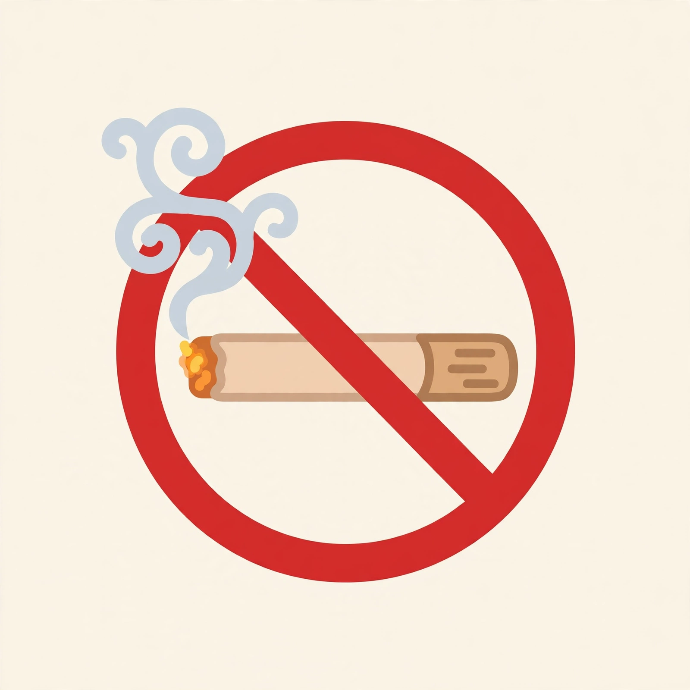
Projector remote プロジェクター リモコン 投影仪遥控器 프로젝터 리모컨 Télécommande du projecteur Mando del proyector
🔑 When prompted for a password, please enter 《↑↓←→》.
🔑 パスワードを求められた際は《↑↓←→》を入力してください。
🔑 需要密码时请输入《↑↓←→》。
🔑 비밀번호 입력이 필요하면 《↑↓←→》를 입력해 주세요.
🔑 Si un mot de passe est demandé, saisissez « ↑↓←→ ».
🔑 Si se solicita una contraseña, introduce « ↑↓←→ ».
💡 For other FAQs, please see the official product page below.
💡 そのほかのFAQは下記の公式製品ページをご覧ください。
💡 其他常见问题请参见下方官方页面。
💡 기타 FAQ는 아래 공식 제품 페이지를 참고해 주세요.
💡 Pour plus de questions fréquentes, consultez la page produit officielle ci‑dessous.
💡 Para más preguntas frecuentes, consulta la página oficial a continuación.
① ON/OFF
① 電源
① 开/关
① 전원
① Marche/Arrêt
① Encendido/Apagado
② volume
② 音量
② 音量
② 볼륨
② volume
② volumen
③ menu
③ メニュー
③ 菜单
③ 메뉴
③ menu
③ menú
④ Light ON/OFF
④ ライト ON/OFF
④ 灯光 开/关
④ 조명 ON/OFF
④ Lumière Marche/Arrêt
④ Luz Encendido/Apagado
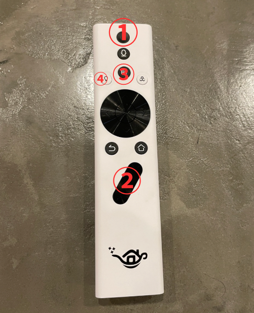
AC remote エアコン リモコン 空调遥控器 에어컨 리모컨 Télécommande de climatisation Mando del aire acondicionado
① heating
① 暖房
① 采暖
① 난방
① chauffage
① calefacción
② cooling
② 冷房
② 制冷
② 냉방
② climatisation
② refrigeración
③ dry
③ 除湿
③ 除湿
③ 제습
③ déshumidification
③ deshumidificación
④ temperature
④ 温度
④ 温度
④ 온도
④ température
④ temperatura
⑤ stop
⑤ 停止
⑤ 停止
⑤ 정지
⑤ arrêt
⑤ parar
Washlet (bidet) ウォシュレット 智能马桶（喷洗） 비데(워シュレット) Washlet (bidet) Washlet (bidé)
① OFF
① OFF
① 关闭
① 끄기
① Arrêt
① Apagar
② flush
② 流す
② 冲水
② 물 내림
② chasse d’eau
② descarga
③ shower toilet
③ ビデ
③ 清洗
③ 세정
③ douchette
③ ducha/limpieza
④ strength
④ 強さ
④ 强度
④ 세기
④ intensité
④ intensidad
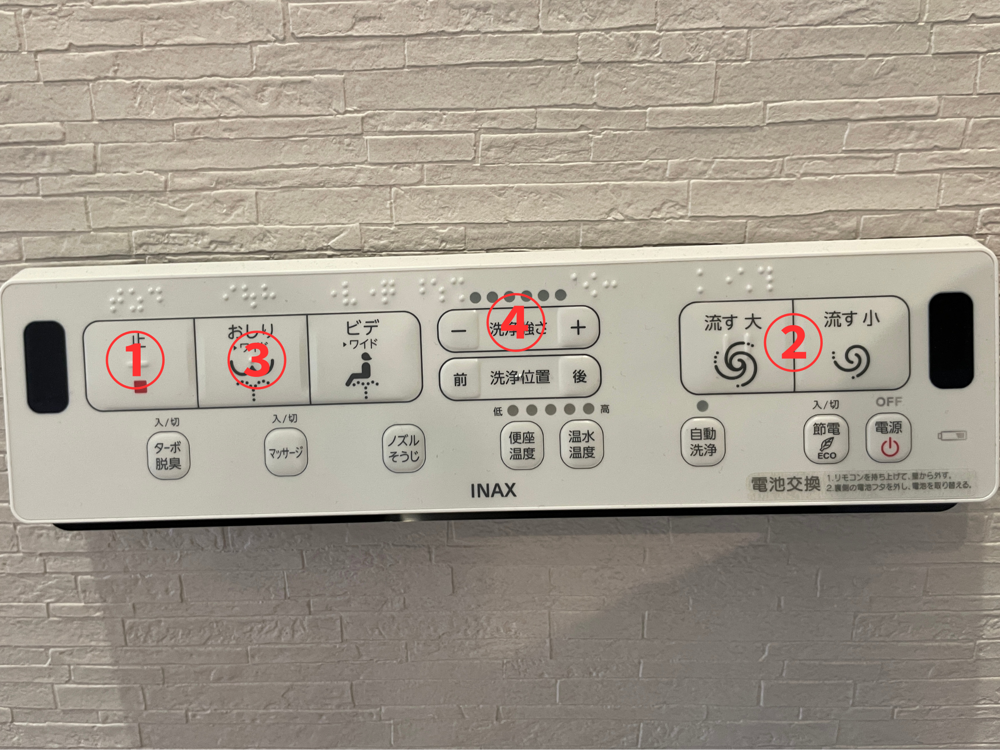
Bathroom hot water panel 浴室給湯パネル 浴室热水控制面板 욕실 온수 패널 Panneau d’eau chaude (salle de bain) Panel de agua caliente (baño)
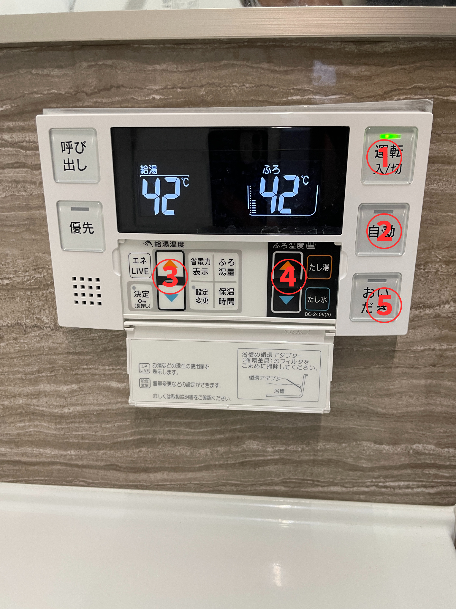
① ON/OFF
① 電源
① 开/关
① 전원
① Marche/Arrêt
① Encendido/Apagado
② auto
② 自動
② 自动
② 자동
② auto
② automático
③ shower temperature
③ シャワー温度
③ 花洒水温
③ 샤워 온도
③ temp. douche
③ temp. de ducha
④ bathtub temperature
④ 追い焚き/浴槽温度
④ 浴缸水温
④ 욕조 온도
④ temp. baignoire
④ temp. de bañera
Kitchen hot water panel キッチン給湯パネル 厨房热水控制面板 주방 온수 패널 Panneau d’eau chaude (cuisine) Panel de agua caliente (cocina)
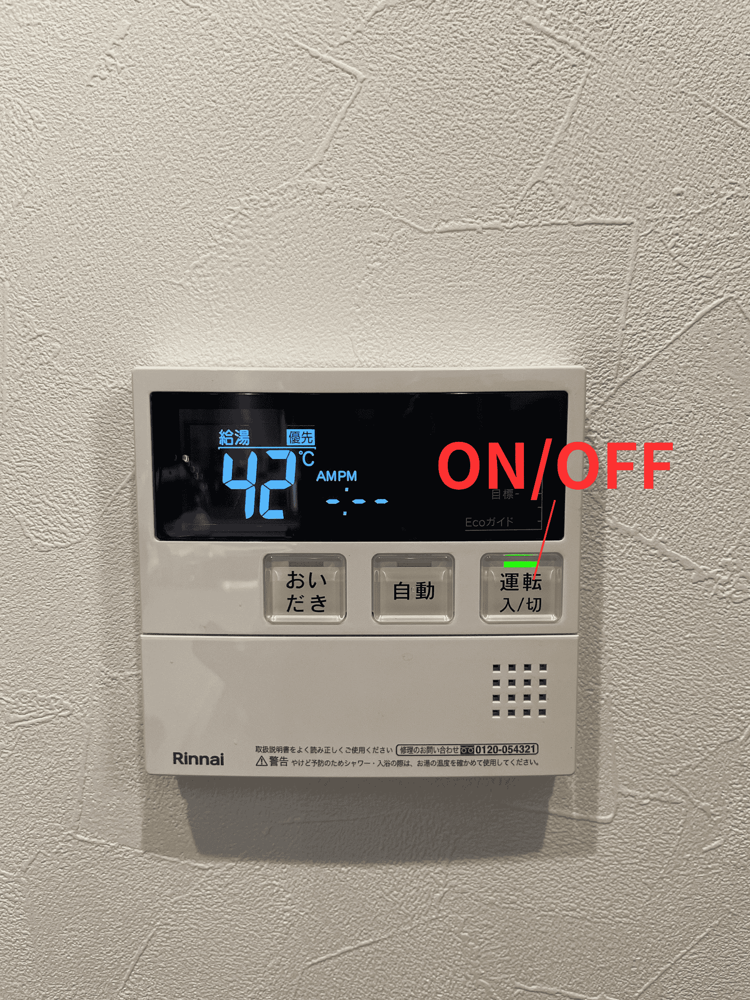
Gas cooker ガスコンロ 燃气灶 가스레인지 Cuisinière à gaz Cocina de gas
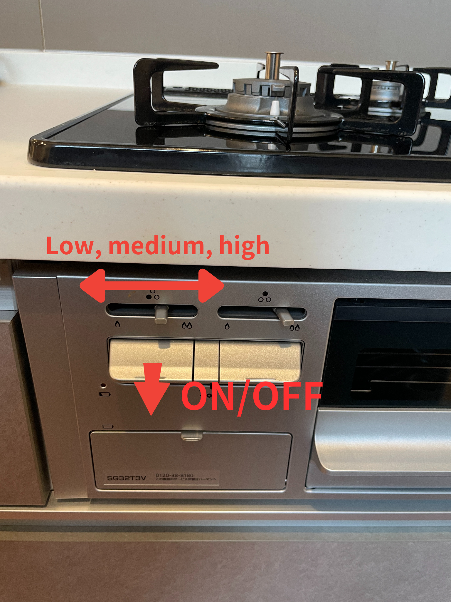
Rice cooker 炊飯器 电饭煲 전기밥솥 Cuiseur à riz Arrocera
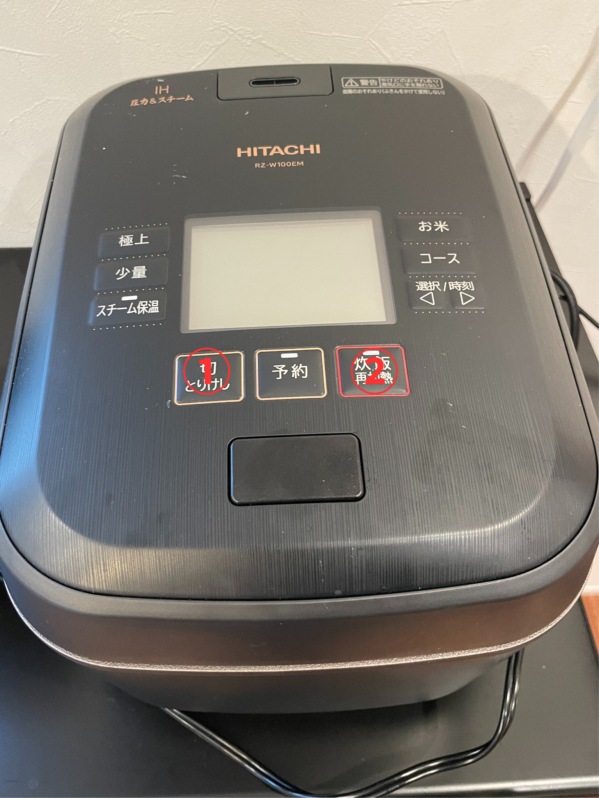
① cancel
① 取消
① 取消
① 취소
① annuler
① cancelar
② cooking / reheat
② 炊飯 / 再加熱
② 煮饭 / 重新加热
② 취사 / 재가열
② cuisson / réchauffer
② cocinar / recalentar
Bath dehumidifier 浴室暖房乾燥機 浴室暖风干燥机 욕실 난방 건조기 Sèche‑linge de salle de bain Deshumidificador del baño
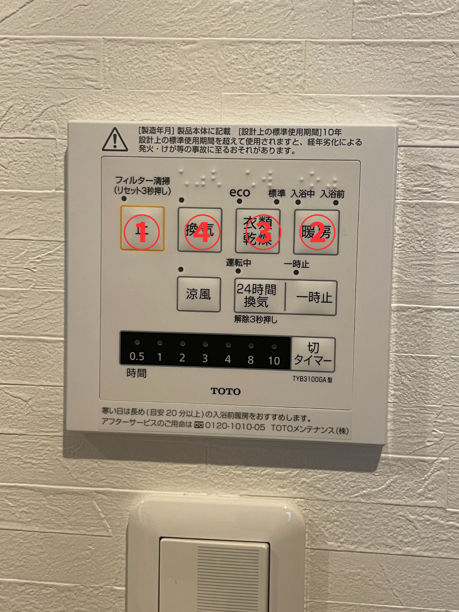
① OFF
① 停止
① 关闭
① 끄기
① Arrêt
① Apagar
② heater
② 暖房
② 暖风
② 난방
② chauffage
② calefacción
③ dry
③ 乾燥
③ 干燥
③ 건조
③ séchage
③ secar
④ ventilation
④ 換気
④ 通风
④ 환기
④ ventilation
④ ventilación
Microwave 電子レンジ 微波炉 전자레인지 Four à micro‑ondes Microondas
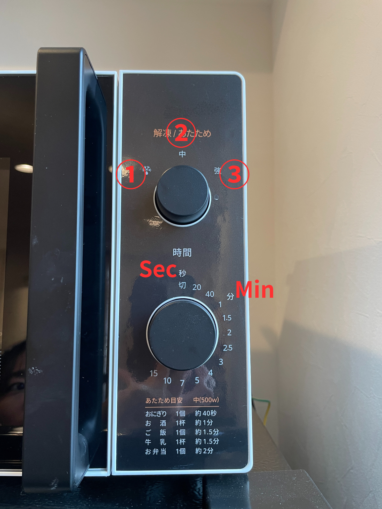
① thaw
① 解凍
① 解冻
① 해동
① décongélation
① descongelar
② middle temperature
② 中温
② 中温
② 중온
② température moyenne
② temperatura media
③ high temperature
③ 高温
③ 高温
③ 고온
③ haute température
③ alta temperatura
Laundry machine 洗濯機 洗衣机 세탁기 Machine à laver Lavadora
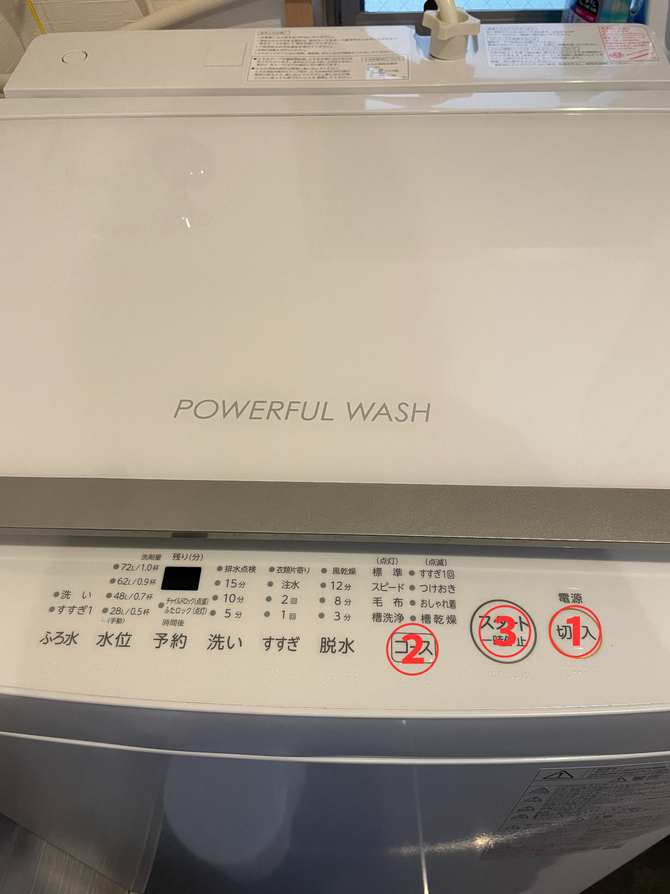
1) Press the power button (①)
2) Select standard course (②)
3) Press start (③)
① 電源ボタンを押す
② 標準コースを選ぶ
③ スタート
1）按下电源键（①）
2）选择标准程序（②）
3）按开始（③）
1) 전원 버튼(①)을 누릅니다
2) 표준 코스 선택(②)
3) 시작(③)
1) Appuyez sur le bouton d’alimentation (①)
2) Sélectionnez le programme standard (②)
3) Appuyez sur Démarrer (③)
1) Pulsa el botón de encendido (①)
2) Selecciona el ciclo estándar (②)
3) Pulsa Iniciar (③)
Circuit Breaker ブレーカーが落ちた場合 断路器 차단기 Disjoncteur Interruptor automático
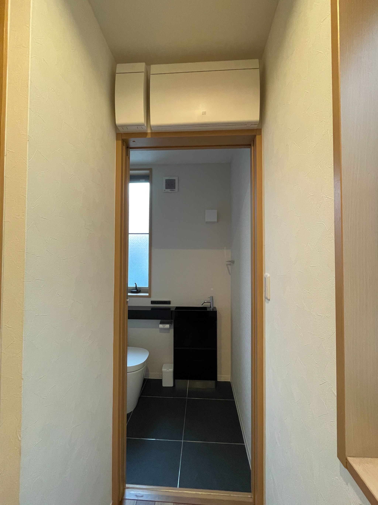
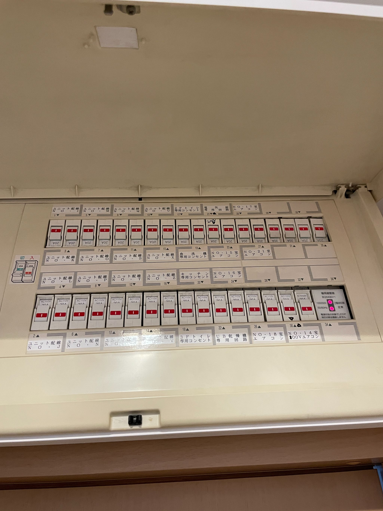
If the breaker trips, turn off appliances that were in use and switch all breakers back on.
もしブレーカーが落ちた場合、使用中の電化製品の電源を切り、ブレーカーを全て上げてください。
若断路器跳闸，请先关闭正在使用的电器，然后将所有开关拨回到“开”。
차단기가 떨어지면 사용 중인 전자기기의 전원을 끄고 모든 스위치를 다시 올려 주세요.
Si le disjoncteur se déclenche, éteignez les appareils en cours d’utilisation puis remettez tous les interrupteurs sur ON.
Si salta el automático, apaga los aparatos en uso y vuelve a subir los interruptores.
Gas Supply ガスが止まった場合 燃气供应 가스 공급 Alimentation en gaz Suministro de gas
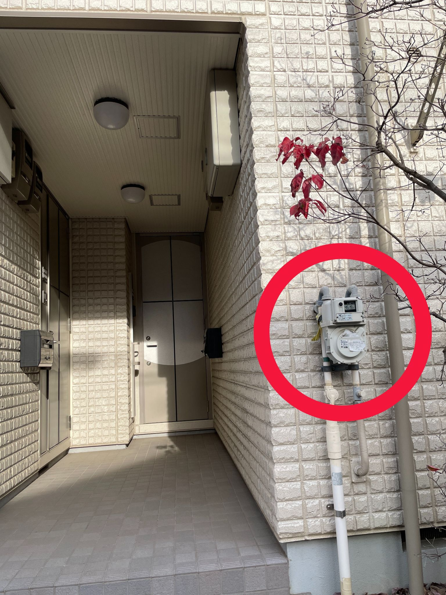
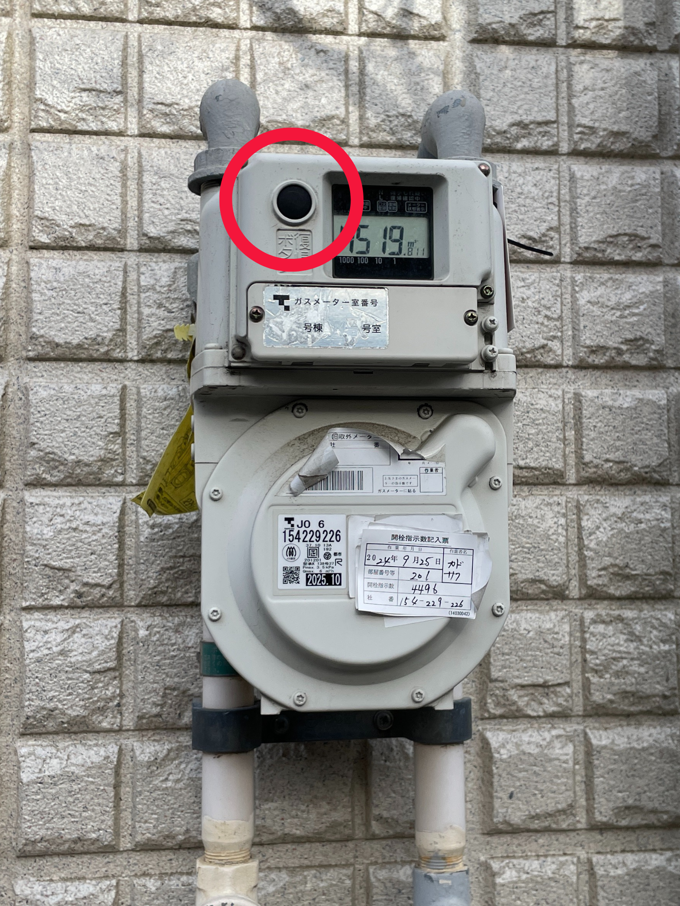
If hot water stops throughout the home, reset the outdoor gas meter. Press and hold the reset button.
給湯器がONになっているのにも関わらずお湯が出ない場合は、玄関向かって右側にございますガスメーターの復帰ボタンを長押ししてください。
如全屋热水停止，请重置室外煤气表。请长按复位按钮。
집 전체 온수가 나오지 않으면 실외 가스미터의 복귀 버튼을 길게 눌러 리셋해 주세요.
Si l’eau chaude s’arrête dans tout le logement, réinitialisez le compteur de gaz extérieur. Maintenez le bouton de réinitialisation enfoncé.
Si se detiene el agua caliente en toda la casa, restablece el medidor de gas exterior. Mantén pulsado el botón de reinicio.
Garbage separation ゴミストッカー 垃圾分类 쓰레기 분리 Tri des déchets Separación de basura
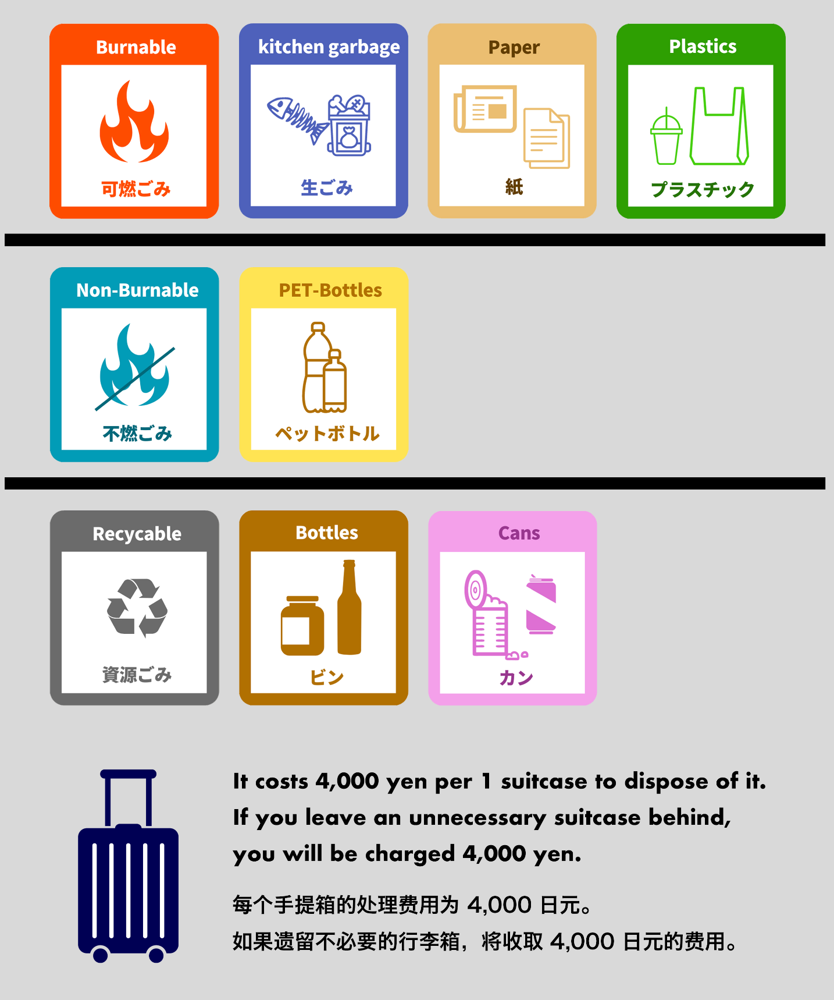
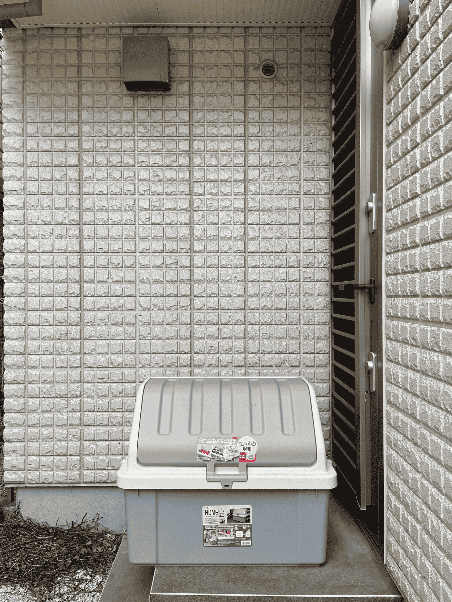
When your room trash is full, please place the tied bag in the outside trash stocker.
お部屋のゴミがいっぱいになりましたら、部屋の外にゴミストッカーがございますのでご利用ください。
房间垃圾装满后，请将系好的垃圾袋放入室外垃圾箱。
방의 쓰레기가 가득 차면 문 밖 쓰레기 보관함에 넣어 주세요.
Lorsque votre sac est plein, déposez‑le dans le conteneur extérieur prévu.
Cuando la basura se llene, coloca la bolsa cerrada en el contenedor exterior.